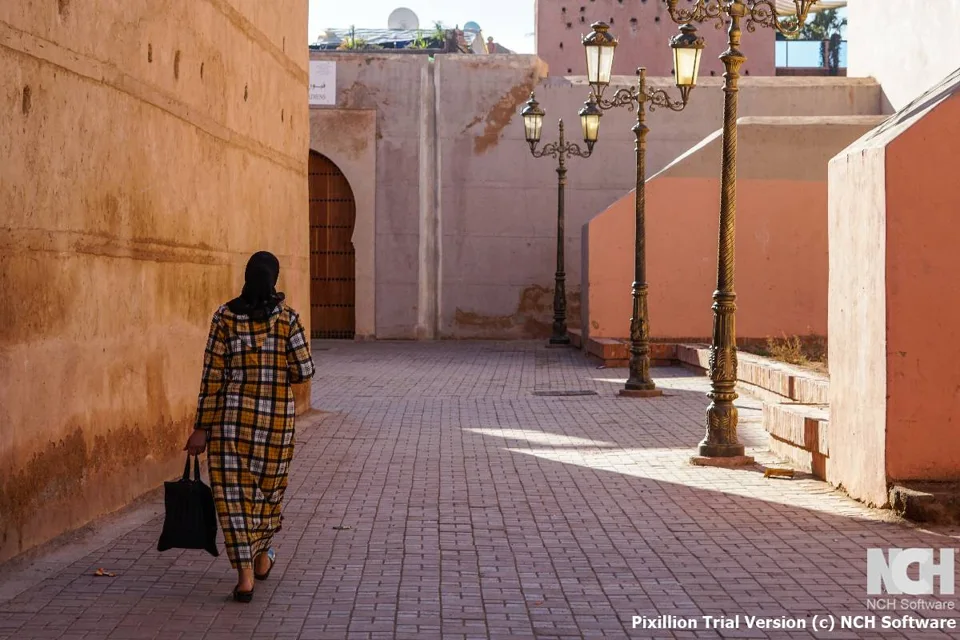

Villes & désert
Villes, ruelles bleues & Sahara
Casablanca Marrakech
Une traversée du pays en version condensée, par Chefchaouen et Fès, avec une nuit au pied des dunes de Merzouga.
Privé · Sur mesureDécouvrir le voyage
Villes impériales
Des rues aux tons chauds, des souks animés et une porte d’entrée vers le Haut Atlas.
Accordez du temps à Marrakech au début ou à la fin de votre voyage. Alternez la médina animée avec une pause dans un patio, et faites une place à la cuisine, à l’artisanat et à l’architecture de la ville.
Ajouter à mon voyage ↗
DU TEMPS BIEN EMPLOYÉ
RELIER LES LIEUX
Villes & désert
Casablanca Marrakech
Une traversée du pays en version condensée, par Chefchaouen et Fès, avec une nuit au pied des dunes de Merzouga.
Escapades au Sahara
Marrakech Marrakech
Une courte échappée vers le sud : l’Atlas, la vallée du Drâa, puis le désert autour de M’Hamid.
Grands circuits
Casablanca Casablanca
Les médinas du Nord, les paysages du Sahara et Marrakech réunis dans un circuit varié, avec retour à Casablanca.
Escapades au Sahara
Marrakech Marrakech
Un voyage vers le désert du Sud par Aït Ben Haddou, la vallée du Drâa et les dunes sauvages au-delà de M’Hamid.
Grands circuits
Marrakech Marrakech
Une boucle tournée vers la montagne : le Haut Atlas, la vallée de l’Ounila, Aït Ben Haddou et les palmeraies de Skoura.
Villes & désert
Marrakech Fès
De Marrakech à Fès en passant par Aït Ben Haddou, la région du Dadès et une vraie nuit au Sahara près de Merzouga.
Escapades au Sahara
Marrakech Marrakech
Une boucle depuis Marrakech : villages de montagne, vallées des kasbahs, gorges du Todra, dunes de Merzouga et vallée du Drâa.
Grands circuits
Casablanca Marrakech
Un itinéraire culturel de Casablanca à Marrakech, entre marchés, ateliers, balades en médina et repas pris le temps.
Grands circuits
Marrakech Marrakech
Le silence du Sahara et l’air de l’Atlantique, sur une boucle depuis Marrakech par Merzouga, le pays des kasbahs et Essaouira.
Grands circuits
Marrakech Fès
Un itinéraire plus lent pensé pour les photographes, entre lumière du matin sur les kasbahs, vallées, dunes et médina de Fès.
Grands circuits
Casablanca Casablanca
Une boucle plus complète depuis Casablanca : Chefchaouen, Fès, le Sahara, les vallées des kasbahs, Marrakech et la côte atlantique.
Grands circuits
Casablanca Casablanca
Un circuit privé plus lent, qui laisse aux villes impériales, aux routes du Sahara, à la traversée de l’Atlas et à la côte le temps de se révéler.
Grands circuits
Casablanca Casablanca
Un vaste circuit privé pour qui veut tout voir : les médinas du Nord, le Sahara, les vallées du Sud, la montagne et une respiration sur l’Atlantique.
UN VOYAGE À VOTRE IMAGE
Un lieu coup de cœur, quelques dates, une grande envie. Construisons un voyage autour de vous.